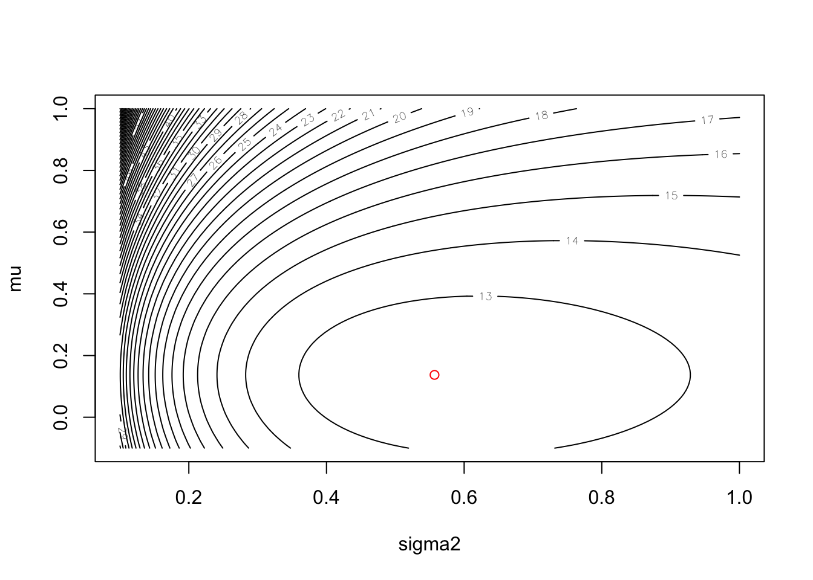

8 Maximum Likelihood
During the lectures, you saw how we could use a brute-force search of parameters to find the maximum likelihood estimate of an unknown mean for a Normal distribution given a set of data. In this exercise, we will now look at how we would do this more efficiently in real life.
8.1 The likelihood function
First, we are going to write a function to compute the log-likelihood function given parameters:
neglogLikelihood <- function(mu, x) {
logF = dnorm(x, mean = mu, sd = 1, log = TRUE)
return(-sum(logF))
}Note that this function returns the -sum(logF) because the numerical optimisation algorithm we are going to use finds the minimum of a function. We are interested in the maximum likelihood but we can turn this into a minimisation problem by simply negating the likelihood.
Now, lets assume our data is captured in the following vector:
x = c(-0.5, 1.0, 0.2, -0.3, 0.5, 0.89, -0.11, -0.71, 1.0, -1.3, 0.84)
n = length(x)8.2 Optimisation
Now, we will need to define an initial search value for the parameter, we will arbitrarily pick a value:
mu_init = 1.0Now we will use the R function optim to find the maximum likelihood estimate. As mentioned above, optim finds the minimum value of a function so in this case we are trying to find the parameter that minimises the negative log likelihood.
out <- optim(mu_init, neglogLikelihood, gr = NULL, x, method = "L-BFGS-B",
lower = -Inf, upper = Inf)Here, this says that we will start the search at mu_init using the function logLikelihood that we have defined above. The optim algorithm will use the L-BFGS-B search method. The parameter is allowed to take any value from lower = -Inf to upper = Inf. The result is stored in out.
Once the optimiser has run, we can see what parameter value it has found:
print(out$par)## [1] 0.1372727which we can compare against the sample mean
print(mean(x))## [1] 0.1372727It turns out that it is theoretically known that the maximum likelihood estimate, for this particular problem, is the sample mean which is why they coincide!
We can visualise this further. First we define an array of possible values for mu in this case between -0.1 and 0.3 with 101 values in-between:
mu <- seq(-0.1, 0.3, length = 101)We use the apply function to apply the logLikelihood function to each of the mu values we have defined. This means we do not need to use a for loop:
neglogL <- apply( matrix(mu), 1, neglogLikelihood, x)We can then plot and overlay the maximum likelihood result:
plot(mu, neglogL, pch="-")
points(out$par, out$value, col="red", pch=0)The plot shows that optim has found the mu which minimises the negative log-likelihood.
8.3 Two-parameter estimation
Now suppose both the mean and the variance of the Normal distribution are unknown and we need to search over two parameters for the maximum likelihood estimation.
We now need a modified negative log-likelihood function:
neglogLikelihood2 <- function(theta,x) {
mu <- theta[1] # get value for mu
sigma2 <- theta[2] # get value for sigma2
# compute density for each data element in x
logF <- dnorm(x, mean = mu, sd = sqrt(sigma2), log = TRUE)
return(-sum(logF)) # return negative log-likelihood
}Notice that we pass through one argument theta whose elements are the parameters for mu and sigma2 which we unpack within the function.
Now we can run optim but this time the initial parameters values must be initialised with two values. Furthermore, as variance cannot be negative, we bound the possible lower values that sigma2 can take by setting lower = c(-Inf, 0.001). The second argument means sigma2 cannot be lower than 0.001:
theta_init = c(1, 1)
out <- optim(theta_init, neglogLikelihood2, gr = NULL, x, method = "L-BFGS-B",
lower = c(-Inf, 0.001), upper = c(Inf, Inf))We can now visualise the results by creating a two-dimensional contour plot. We first need to generate a grid of values for mu and sigma2:
# one dimensional grid of values for mu
mu <- seq(-0.1, 1.0, length = 101)
# one dimensional grid of values for sigma2
sigma2 <- seq(0.1, 1.0, length = 101)
mu_xx <- rep(mu, each = 101) # replicate this 101 times
sigma2_yy <- rep(sigma2, times = 101) # replicate this 101 times
# generate grid of values (each row contains a unique combination
# of mu and sigma2 values)
mu_sigma_grid <- cbind(mu_xx, sigma2_yy)Now we apply our negative log-likehood function to this grid to generate a negative log-likelihood value for each position on the grid:
neglogL2 <- apply(mu_sigma_grid, 1, neglogLikelihood2, x)We now use the contour function to plot our results:
# convert vector of negative log-likelihood values into a grid
neglogL2 <- matrix(neglogL2, 101)
# draw contour plot
contour(sigma2, mu, neglogL2, nlevels = 50, xlab = "sigma2", ylab = "mu")
# overlay the maximum likelihood estimate as a red circle
points(out$par[2], out$par[1], col="red")
Excellent! We have now found the maximum likelihood estimates for the unknown mean and variance for the Normal distribution that our data is assumed to be drawn from. Let’s compare our estimates against the sample mean and variance. First, the estimates:
print(out$par[1]) # mu estimate## [1] 0.1372727print(out$par[2]) # sigma2 estimate## [1] 0.5569665Now, the sample mean and variances:
print(mean(x)) # sample mean## [1] 0.1372727print(var(x)) # sample variance (normalised by n-1)## [1] 0.6126618print(var(x)*(n-1)/n) # sample variance (normalised by n)## [1] 0.5569653Interesting! The maximum likelihood estimates return the sample mean and the **biased* sample variance estimate (where we normalise by \(n\) and not \(n−1\)). Indeed, it turns out that theoretically, the maximum likelihood estimate does give a biased estimate of the population variance.
8.4 Problem: MLE
A potentially biased coin is tossed 10 times and the number of heads recorded. The experiment is repeated 5 times and the number of heads recorded was 3, 2, 4, 5 and 2 respectively. Can you derive a maximum likelihood estimate of the probability of obtaining a head?